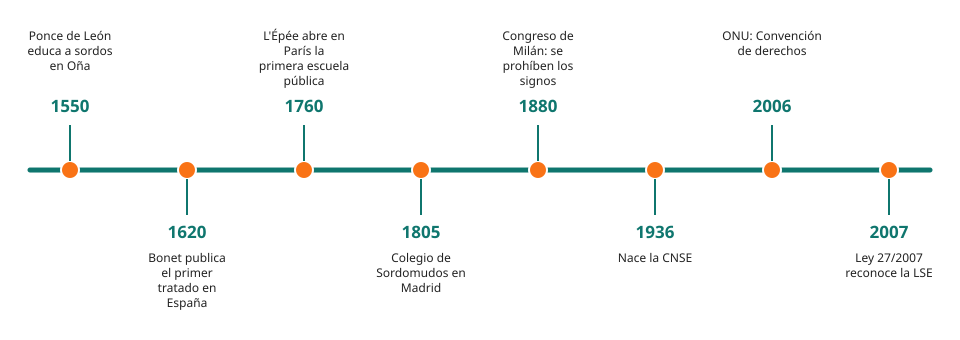

Módulo 2: Historia y derechos de la lengua de signos
De los primeros maestros a la ley de 2007, y por qué los signos fueron prohibidos durante décadas.
La lengua de signos tiene una historia larga, con avances y prohibiciones. Conocerla ayuda a entender por qué la comunidad sorda defiende tanto su derecho a signar.
Una lengua con historia

1. Los primeros maestros
Aunque las personas sordas se comunicaban por signos desde siempre, la educación organizada llegó más tarde. En España destaca Pedro Ponce de León, monje benedictino del siglo XVI, que enseñó a hablar y a leer a hijos sordos de familias nobles. En 1620, Juan Pablo Bonet publicó un tratado sobre la enseñanza de las personas sordas. En Francia, el abad Charles-Michel de l'Épée fundó hacia 1760 la primera escuela pública para sordos y usó los signos de la comunidad como lengua de enseñanza.
2. El Congreso de Milán (1880): una decisión muy dañina
En 1880, un congreso de educadores de sordos (con pocas personas sordas presentes) decidió que la enseñanza debía hacerse solo por vía oral y desaconsejó los signos. Durante muchas décadas, en muchos colegios se prohibió signar, a veces atando las manos a los niños. Esta política se llama oralismo. Muchas personas sordas no tuvieron acceso a una lengua completa en la infancia, y el nivel educativo de la comunidad sufrió durante generaciones.
3. La recuperación de la lengua
Desde mediados del siglo XX, la investigación lingüística demostró que las lenguas de signos son lenguas naturales completas, con gramática propia. Las asociaciones de personas sordas, como la CNSE (Confederación Estatal de Personas Sordas, fundada en 1936 y con ese nombre desde 2013), lucharon por su reconocimiento.
4. Derechos hoy
| Norma | Qué dice, en resumen |
|---|---|
| Convención de la ONU sobre los derechos de las personas con discapacidad (2006) | Reconoce las lenguas de signos como lenguas y el derecho a usarlas y a recibir educación en ellas |
| Ley 27/2007, de 23 de octubre (España) | Reconoce las lenguas de signos españolas (LSE y LSC) y regula los medios de apoyo a la comunicación oral de personas sordas, con discapacidad auditiva y sordociegas |
| Día Internacional de las Lenguas de Signos | El 23 de septiembre, declarado por la ONU |
⚠️ Errores frecuentes y cómo corregirlos
| Lo que pasa | Por qué | Cómo corregirlo |
|---|---|---|
| Pensar que los signos «son un invento reciente» | Se ven en las redes y en la televisión | Las comunidades sordas signan desde hace siglos; lo reciente es su reconocimiento |
| Creer que el oralismo «ayudó a integrarse» | Se presentó así | Dejó a muchas personas sin una lengua completa en la infancia |